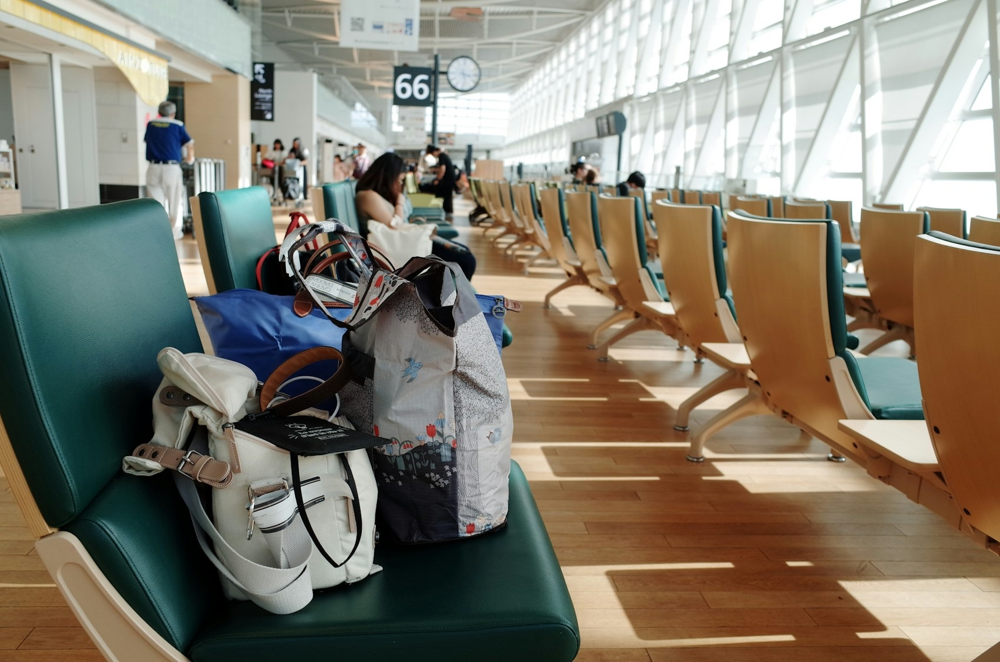
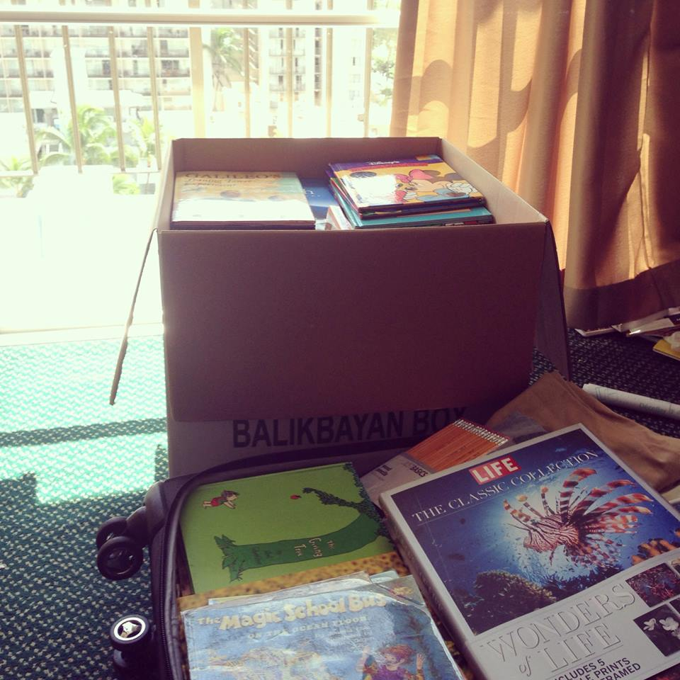
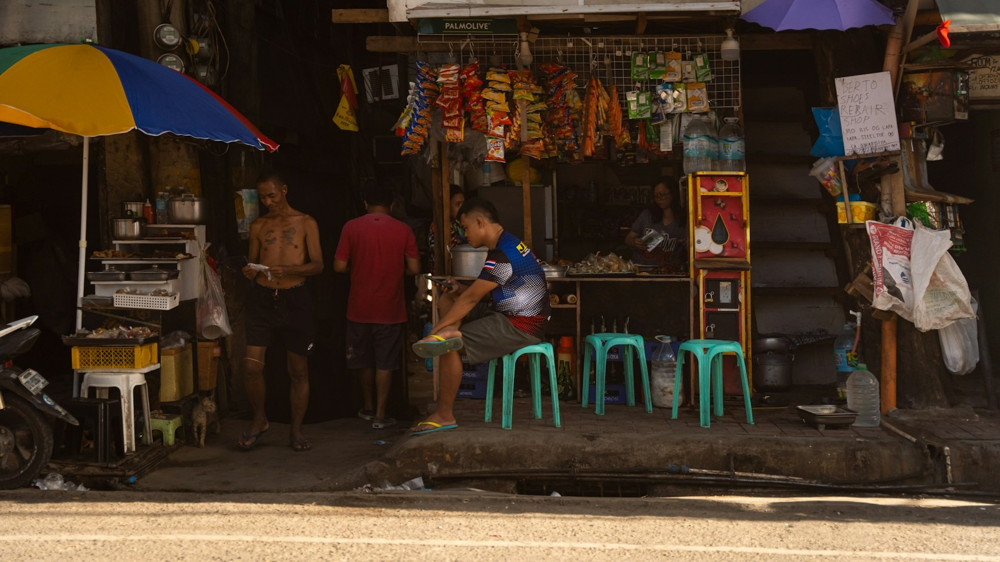
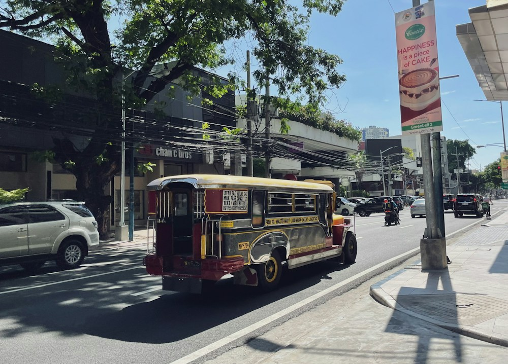
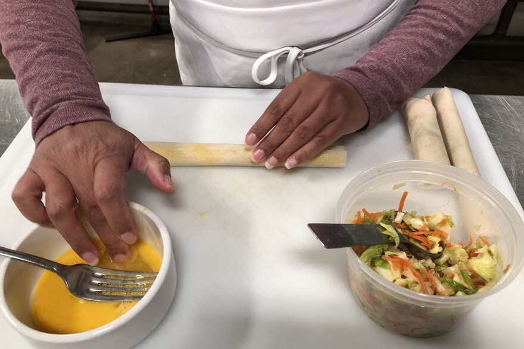
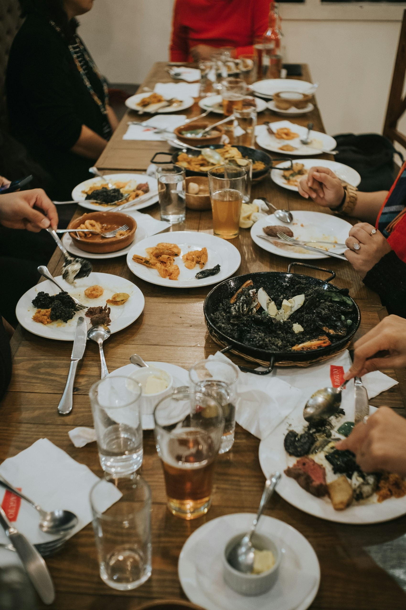

Diaspora
Lives that move across borders,
with connections that continue.
An interactive literary experience
Letters, keepsakes, and the lives
between here and home.

A real box, a familiar journey.
Choose an object. Discover a story.
Keep reading. Find another way of seeing home.
The Box / Begin exploring
Ordinary things. Stories that travel much further.
The collection / Leaving, staying, returning
Follow a memory, a theme, or a familiar feeling.

A reading and viewing room
Migration stories, films, and other ways of being Filipino.
Featured film / Canada
Voices and memories from the journey between the Philippines and Canada.
Philippine Arts Council · 2021 · 1:02
Each work is credited and opens at its original source.
Tell us about a person, a place, or a moment
that has stayed with you.
About the project
Migration. Memory. Belonging.
Every object carries a memory of
someone, somewhere.

A literary website about the Filipino diaspora, told through the things we carry and the people we remain connected to.
Open a virtual balikbayan box. Choose an object. Read the voice of someone who left and the voice of someone who stayed. Follow those experiences into other stories, films, and reflections.
Isang pampanitikang website tungkol sa buhay ng mga Pilipino sa iba't ibang panig ng mundo, sa mga bagay na dala natin at sa mga taong nananatiling bahagi ng ating buhay.
Magbukas ng isang balikbayan box. Pumili ng bagay. Basahin ang kuwento ng isang umalis at ng isang naiwan. Tuklasin ang iba pang mga kuwento, pelikula, at pagninilay na nagdurugtong sa ating mga karanasan.

Lives that move across borders,
with connections that continue.

The objects, language, food,
and stories that keep a past alive.

The many ways people make
a place, a family, or a home.
Read beyond departures and remittances. Find the routines, conversations, and small acts of care that keep people connected.
Stories you add, including their media, are saved on this browser and device. They are not sent to a shared public archive. You can edit, remove, or back up your own contributions. Clearing browser data can remove them.
External readings open on their publishers' websites. YouTube connects only when you choose to play a video. The built-in stories are original fiction.